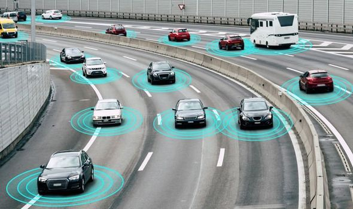

Human mistakes are a huge cause of road accidents all around the world. In fact, it was the largest cause in Britain in 2018. Over 100,000 accidents happened in the UK due to drivers suddenly braking, not looking properly, and general lack of control (Unknown, 2018). So, shouldn't autonomous vehicles be safer to travel in, by removing the drivers from the equation?
Maybe not.
Tragic incidents have already occurred due to the failure of the AI software. In 2016, a man was killed as Tesla’s Autopilot system did not react to a truck in its path (Allen&Overy, 2017). This only one example of when self-driving cars went horribly wrong.
One of the main challenges’ developers come across when developing autonomous vehicles is that driving requires the AI to process and respond to many social interactions (Dass, 2018). This is tough to do since the vehicles will have to take other drivers, obstacles, cyclists and pedestrians into account. For example, while a human driver can use their judgement to determine whether a person is going to cross a road, an AI can't yet make that decision. Taking all this into account, it appears driverless cars may cause more harm than good when they roll onto the streets in the next decade.
What is the Right Decision?
This also calls into question the ethics on self-driving cars and disagreement on what the correct way is to react to different situations. If an emergency were to arise, who should the car protect? The occupants or the pedestrians and the other drivers? Who should take responsibility; the occupants, pedestrians, or the programmer who made the AI software? It has to be decided what is universally 'morally' correct before algorithms and code can made.
Another obstacle researchers will come across is the legality of autonomous vehicles (Barabás et al, 2017). The Convention on Road Traffic signed in Vienna in 1968 (Economic Commission for Europe, 1968) stated “Every moving vehicle or combination of vehicles shall have a driver”, as well as “Every driver shall at all times be able to control his vehicle” in Article 8. These requirements meant the use of self-driving cars was illegal in countries which signed the document.
It wasn't until 2014 when the original document was amended, which stated “Vehicle systems which influence the way vehicles are driven and are not in conformity with the aforementioned conditions of construction, fitting and utilization, shall be deemed to be in conformity with paragraph 5 of this Article and with paragraph 1 of Article 13, when such systems can be overridden or switched off by the driver”. This meant that the steering of the car could be carried out by an automatic system as long as a human driver can take over at any time. The amendment paves the way for the legal framework for the semi-autonomous vehicles.
Despite there being regulatory framework for the development and testing of autonomous cars, there is still no legislation for the use of these vehicles. Laws and documents concerning safety, public policy and technical standard must be finalized and implemented before autonomous vehicles can be commercially available for public use.
A huge worry with driverless cars is the risks with cyber security. Cyber-attacks and hacks are becoming increasingly advanced, which is becoming a critical problem for businesses and law makers. Companies such as Tesla, Google and Ford may be huge targets for hackers, whose aims are to steal shared data from their cars. Another threat can be criminals, who can control the car's systems and use this to cause harm or to form ransoms (Allen&Overy, 2017).
An Inside Job?
It isn't just these criminals’ companies should be concerned for. In 2015, 60% of cyber-attacks were an 'inside job'. Whether the intent was malicious (i.e. an angry ex-employee seeking revenge on a former employer) or not (i.e. employees being careless, not following protocol, etc.), the consequences could be detrimental. The aftermath of an attack can include:
Unknown (2018) Most Common Causes for Road Accidents in Britain Revealed. Available at: https://www.regtransfers.co.uk/content/common-causes-for-road-accidents-in-britain/ (Accessed: 21 October 2019)
Dass, R (2018) 5 Key Challenges faced by Self-driving cars. Available at: https://medium.com/@ritidass29/5-key-challenges-faced-by-self-driving-cars-ed04e969301e (Accessed: 24 October 2019)
Barabás et al (2017) Current challenges in autonomous driving. Unknown, IOP Conference Series: Materials Science and Engineering. Available at: https://iopscience.iop.org/article/10.1088/1757-899X/252/1/012096/pdf (Assessed at: 22 October 2019)
Economic Commission for Europe, Inland Transport Committee, Convention on Road Traffic, Vienna, 1968.
Allen&Overy (2017) Autonomous and connected vehicles: navigating the legal issues. Available at: http://www.allenovery.com/SiteCollectionDocuments/Autonomous-and-connected-vehicles.pdf (Assessed: 23 October 2019)
Cars image - https://www.express.co.uk/life-style/cars/1180570/autonomous-vehicles-driverless-cars-technology-london
Cyber Security image - https://www.enisa.europa.eu/news/member-states/cyber-security-breaches-survey-2018